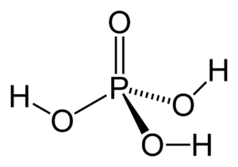

Ортофосфорна кислота (H3PO4) — це безбарвна рідина, яка є сильно корозійною і використовується в різних промислових процесах. Він містить один атом фосфору, три атоми водню та чотири атоми кисню в кожній молекулі.
Хімічна реакція ортофосфорної кислоти: P2O5+3H2O→H3PO4
Дворівневий список, що показує розподіл груп факультету КІУ за спеціальностями СП, КСМ та СКС.